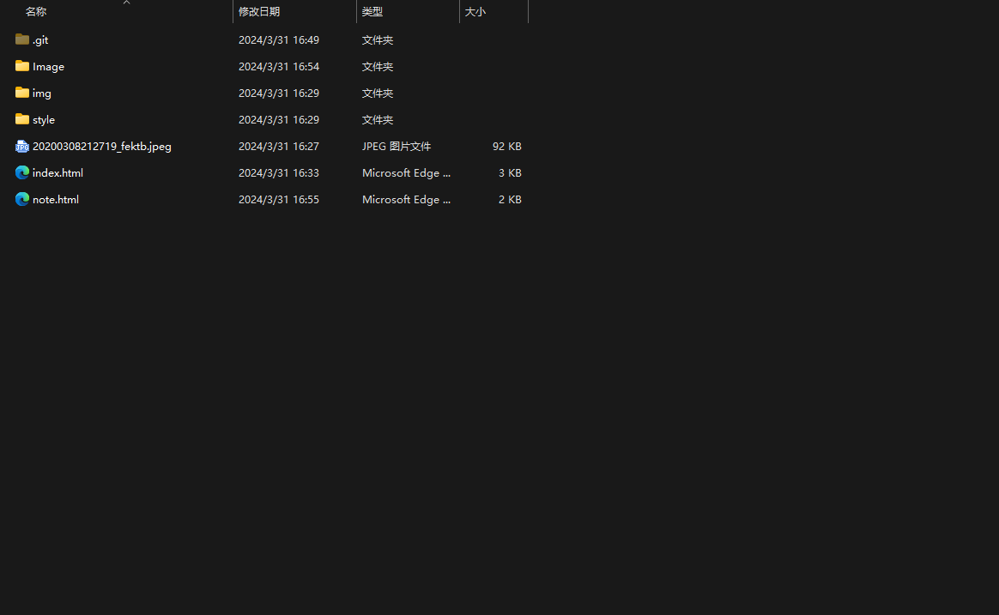

如何push GitHub 的远程仓库
打开 CMD 窗口
输入 git --version 检查git是否安装正确
通过 git clone （远程仓库的地址） 将远程仓库的地址拉到本地
把老师发送的 Home 的文件复制到远程的文件夹中

用 VScode 打开修改后的本地仓库
提交一个 commit 消息 ， 对本次更改作一个声明
将本地的代码 push 到 GitHub 远程仓库上
第一次 push 需要登录
push 成功后验证是否成功